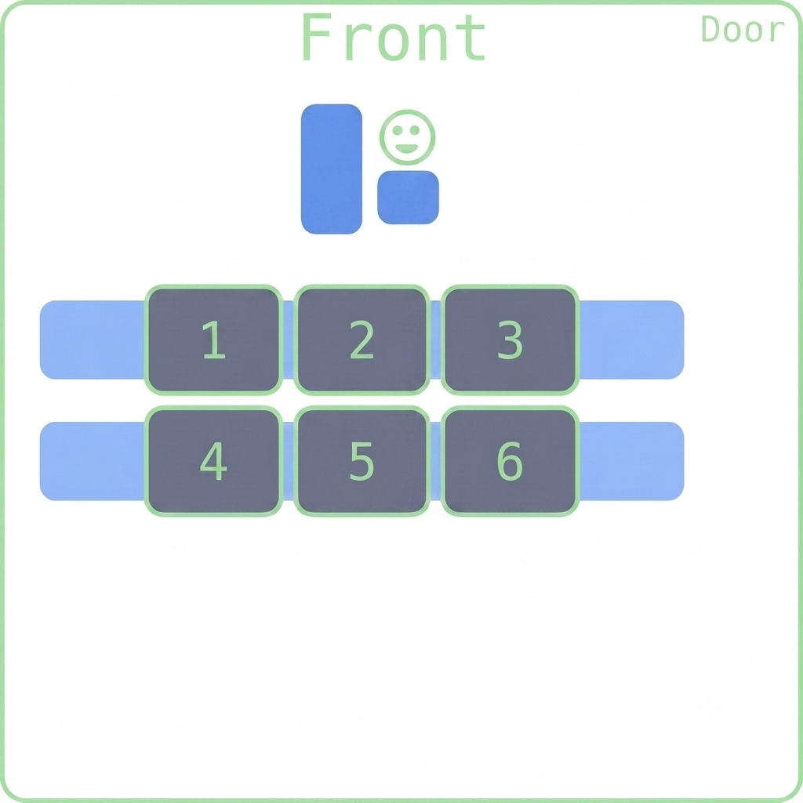
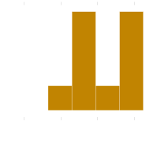

Big-O Sorting
Fred Agbo
November 20, 2026
Happy Wednesday!
- Class grouping today: Scan the QR code or go to https://tools.jedrembold.prof/daily
- Class code is
DecK5 - Introduce yourselves! How long does it take your brain to add up all your siblings birthday?

Quick Announcements
- Midterm 2 results out
- ImageShop project grade published
- All grade reports are out…
- Reach out if there’s any questions/concerns
- Enigma due on Monday night!
- Introducing the last project on Monday
- NO VIDEO
Midterm 2 Debrief

- Final breakdown:
- Max: 101%
- Average: 82.57%
- Median: 79.5%
- St Dev: 15.3%
Daily LO’s
- How does selection sort operate?
- How can we get an idea for how an algorithm will scale just by looking at the code?
- What is Big-O notation?
- Can we identify examples of Big-O notation?
Group Problem 1: Sort It!
- I am distributing small stacks of playing cards to each of your groups
- Designate:
- The processor: the one pointing at the current card that is being looked at
- The memory: the one whose left and right hands will mark the special positions
- The counter: the one tallying how many cards have been looked at
- Shuffle the cards and deal out 5 in a row
- Sort them according to selection sort, following your roles
- How many cards did you look at? Does that agree with what you’d have thought?
- Shuffle all the cards back together and deal them all out.
- Sort again. How many cards were looked at this time? Does this agree any better?
Review of Selection Sort
def selection_sort(array):
for lh in range(len(array)):
rh = lh
for i in range(lh+1, len(array)):
if array[i] < array[rh]:
rh = i
array[lh], array[rh] = array[rh], array[lh]
############################################
L = [31, 41, 59, 26, 53, 58, 97, 93, 23, 84]
selection_sort(L)
Problem 2: Real-World O
- We are going to cycle through some real-world scenarios here
- For each, you’ll have about 2 minutes to discuss with your group what Big-O scaling you think the process would involve
Problem 2a: The Librarian
- Checking a shelf of books to see if any have a torn cover.
Problem 2b: The Mechanic
- Grabbing the largest wrench in a toolbox organized with molded slots for each tool.
Problem 2c: Favorite Movies
- Finding 3 people in a class who all share the same favorite movie.
Problem 2d: The Warehouse
- Retrieving a part from the bin labeled “Part #105” in a large, organized warehouse.
Problem 2e: The Wedding Planner
- Creating a seating chart that ensures that no “mortal enemies” are seated together at the same table.
Problem 3: Algorithm Archaeology
- You have written a lot of code over the course of the semester!
- The following slide will have a handful of target “bounties”
- Your task is to fine examples of each bounty in code that you or someone in your group has written over the course of the semester.
- Be prepared to defend your choices to another group!
Problem 3: The Bounties
- Find a snippet that looks like a single \(O(N)\) loop but is actually \(O(N^2)\) because of a built-in Python function.
- Find an \(O(1)\) operation
- Find an \(O(N^2)\) operation that does not use two nested for loops
- Find an \(O(N)\) operation that finishes in \(O(1)\) under special conditions
- Find the heaviest code you wrote this semester. How does it scale?
Problem 4: Designing a Disaster
- This is a coding problem!
- Linear search is usually \(O(N)\) in the worst case situation.
- Design a searching algorithm that runs in \(O(N^3)\)
- It must still work! That is, it must still return a correct answer.